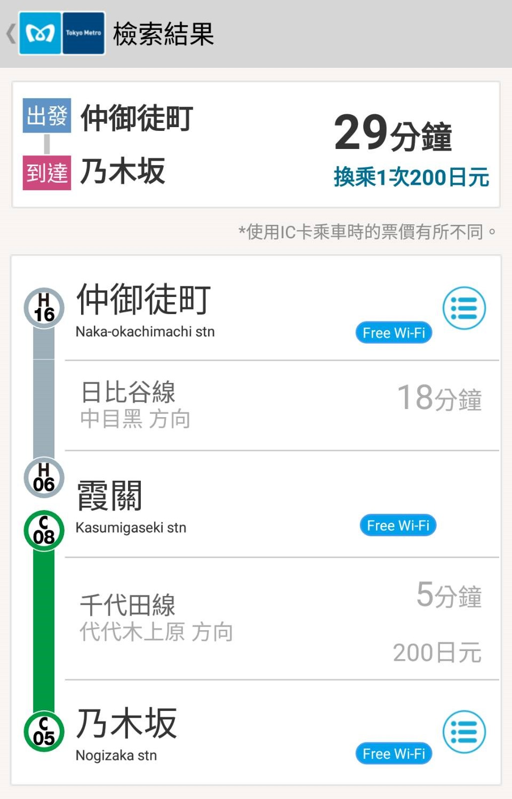

DAY0
行前準備
DAY1
飛東京成田
DAY2
池袋、澀谷
DAY3
大神宮、秋葉原
DAY4
淺草、谷根千
DAY5
六本木
DAY6
回家啦!
08:30
起床梳妝 (看心情出門)
以下時間都是隨意寫的
09:30
離開飯店
從飯店走到
仲御徒町
東京都台東区上野5丁目24−12
MAP
仲御徒町 → 乃本版(約29分鐘,200円) 
10:20
國立新美術館
東京Metro地鐵乃木坂站6號出口直接連通，東京Metro地鐵六本木站4a號出口徒步約5分鐘，都營地鐵大江戶線六本木站7號出口徒步約4分鐘
MAP
12:00
檜町公園
MAP
13:00
一蘭拉麵
東京都港区六本木4-11-11 六本木GMビル2F
MAP
15:20
六本木之丘
MAP
18:20
AFURI阿夫利拉麵
東京都港区六本木6-10-1 六本木ヒルズノースタワー B1F
MAP
20:30
六本木 → 仲御徒町(約24分鐘,200円)
DAY6